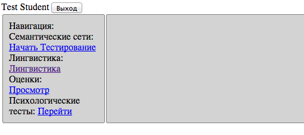
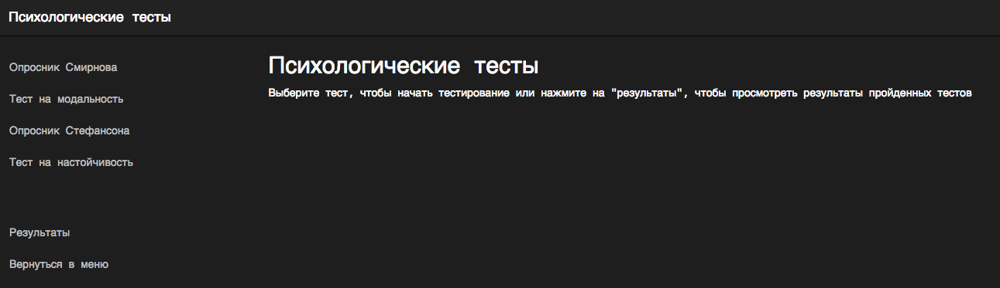
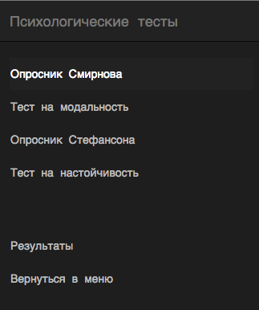
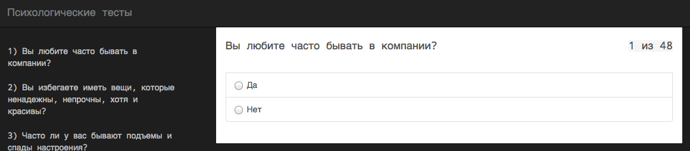

Психотесты
Здесь собраны методические указания для успешного выполнения компонента выявления личностных характеристик обучаемого в Научной лаборатории ИСиТ НИЯУ МИФИ.
Опросник Б. Н. Смирнова позволяет выявить рад полярных свойств темперамента: экстраверсию — интроверсию, эмоциональную возбудимость — эмоциональную уравновешенность, темп реакций (быстрый — медленный), активность (высокую — низкую). Он также имеет шкалу искренности испытуемого при ответах на вопросы, позволяющую оценить надежность полученных результатов.
Данная методика используется для изучения представлений о себе. Разработана В. Стефансоном и опубликован в 1958 г. Достоинством методики является то, что при работе с ней испытуемый проявляет свою индивидуальность, реальное «я», а не «соответствие — несоответствие» статистическим нормам и результатам других людей. Возможна и повторная сортировка того же набора карточек, но в других отношениях:
Методика позволяет определить шесть основных тенденций поведения человека в реальной группе: зависимость, независимость, общительность, необщительность, принятие борьбы и избегание борьбы. Тенденция к зависимости определена как внутреннее стремление индивида к принятию групповых стандартов и ценностей: социальных и морально-этических. Тенденция к общительности свидетельствует о контактности, стремлении образовать эмоциональные связи как в своей группе, так и за ее пределами. Тенденция к борьбе — активное стремление личности участвовать в групповой жизни, добиваться более высокого статуса в системе межличностных взаимоотношений; в противоположность этой тенденции — избегание борьбы — показывает стремление уйти от взаимодействия, сохранить нейтралитет в групповых спорах и конфликтах, склонность к компромиссным решениям. Каждая из этих тенденций имеет внутреннюю и внешнюю характеристики, т. е. зависимость, общительность и борьба могут быть истинными, внутренне присущими личности, а могут быть внешними, своеобразной маской, скрывающей истинное лицо человека. Если число положительных ответов в каждой сопряженной паре (зависимость — независимость, общительность — необщительность, принятие борьбы — избегание борьбы) приближается к 20, то мы говорим об истинном преобладании той или иной устойчивой тенденции, присущей индивиду и проявляющейся не только в определенной группе, но и за ее пределами.
Источник: Открытый электронный ресурс ru.wikipedia.org.
После авторизации вам нужно выбрать вариант Психологические тесты.

Перед вами откроется окно с компонентом выявления личностных характеристик обучаемого.

Компонент интуитивно понятен. Вы выбираете интересующий вас тест и начинаете его проходить.

Каждый тест содержит различное количество вопросов.

Для того чтобы завершить тестирование нужно нажать кнопку Завершить на панели психологические тесты.
Если в тесте есть хотя бы один вопрос без ответа, то система не разрешит вам его завершить. Должны быть даны ответы на все вопросы.